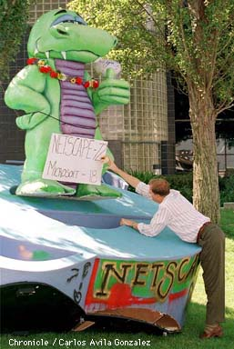

Microsoft Plays Prank on Netscape after Bash
06:49 a.m. Oct 02, 1997 Eastern
MOUNTAIN VIEW, Calif. (Reuter) - A party for 1,000
people Tuesday night apparently was not enough for some
Microsoft Corp. employees. They had to top off the night with a
prank on Internet software rival Netscape Communications Corp.
Netscape employees found a gigantic blue stage prop in the
shape of an "e" in front of their company's front door Wednesday
morning.
The night before, the same 10-by-12-foot stage prop -- which
represents the logo for Microsoft's Internet Explorer, or IE,
browser -- was spotted at a Microsoft bash in San Francisco.
Microsoft Chairman Bill Gates and about 1,000 industry
executives were celebrating the launch of the newest version of
Internet Explorer.
A group of people were seen dropping off the "e" in front of
Netscape's headquarters in Mountain View, Calif., about 1:30
a.m. Wednesday, said Netscape spokeswoman Chris Holten. A card
attached to the prop read, "From the IE team," she said.
"It seems awfully immature to resort to fraternity tactics
to draw attention," Holten said. "We're winning the battle. It's
something you'd expect from a startup, not the largest software
company in the world."
A Microsoft spokeswoman declined to comment.
|
|  |
Netscape and Microsoft have
been battling to dominate the
market for Internet browsers for
the past two years. By most
industry estimates, Netscape has
about three-quarters of the
market with its Navigator browser,
but Microsoft is rapidly
gaining with each new release of
Internet Explorer.
Netscape had the last laugh
in the prank, though. Company
employees put their 12-foot
mascot -- a green Godzilla-like
foam creature dubbed "Mozilla"
-- on top of the "e".
Mozilla held a placard that read,
"Netscape 72, Microsoft 18," referring
to recent market share data.
|
![[Giant picture of Mozilla standing on IE logo]](mozilla-uber-alles.jpg)